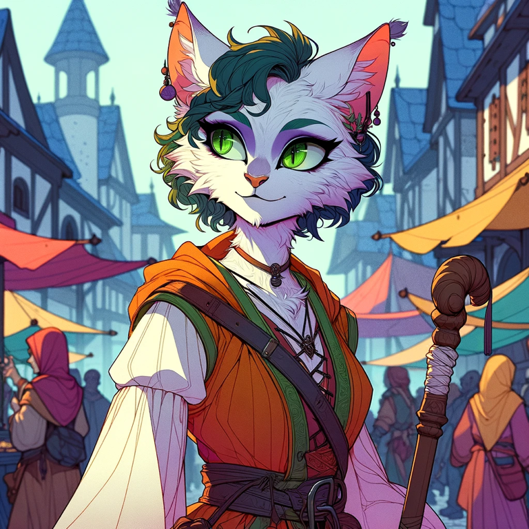
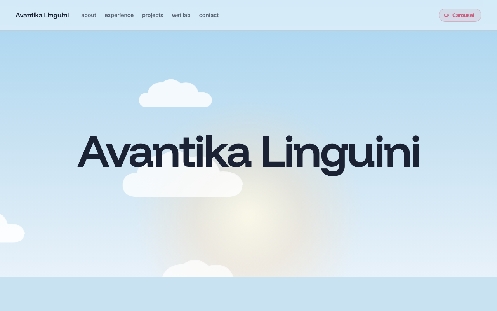
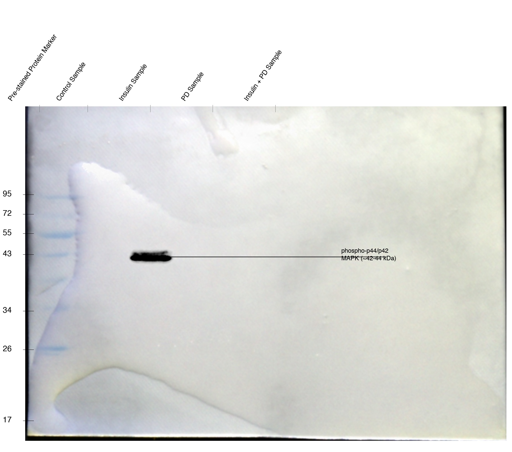
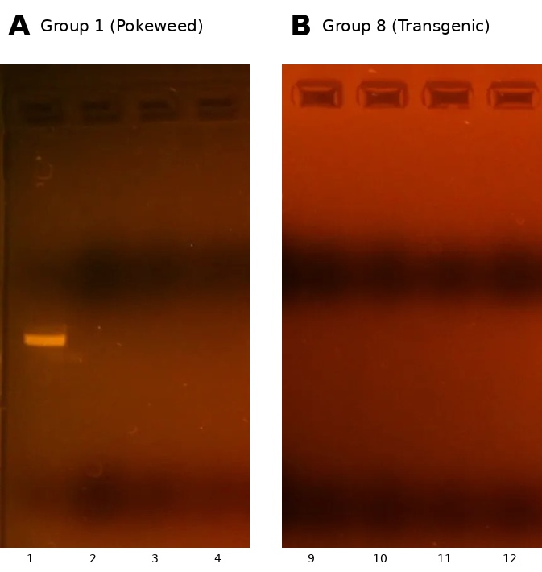

BSc Specialized Honours in Biotechnology from York, graduating April 2026. I work across data engineering, iOS, web, and wet lab science — usually in the same week. The thread is always: build carefully, ship things, learn fast.
Data pipelines for AI models trained on multimodal video at OMEGA Labs. A date-navigation feature inside an Electron desktop app used daily by thousands. Native iOS apps with on-device generation. Python automation tools that survived a cGMP audit at a vaccine plant. Flask and FastAPI dashboards, SwiftUI prototypes, R notebooks for thesis analysis — whatever the next problem needs.
I shipped my first iOS app — Avatar, an AI character generator — at 19, the summer before I took a single CS class. I learned Swift and DALL·E in parallel, watched strangers download something I made, and never looked back. Now I want to keep being one of those people who builds careful consumer software at the intersection of biology and tech — products designed by people who actually understand the science behind them.
Born and raised in Hyderabad. Cambridge A-Levels there, then Toronto in 2022 for university. I speak English, Urdu, Hindi, Sindhi, and some French.
Knocked out the ADE2 gene in S. cerevisiae with CRISPR-Cas9. Synthesized SARS-CoV-2 spike mRNA in vitro. Finished an honours thesis on how people coordinate eye contact across video calls — turns out they mostly avoid it, and the data is wild. Currently reading Designing Data-Intensive Applications.


A year of CRISPR knockouts, mRNA synthesis, MAPK westerns, and an honours thesis. Click to expand the full lab notebook.


biotechnology·molecular biology·CRISPR / genetic engineering·synthetic biology·immunology·cell biology·bioinformatics·vision research·cGMP & regulated data·data engineering·AI & ML·full-stack web·iOS development·statistical modeling·content & design·photography.
I'm in Toronto, graduating April 2026. If you're working at the intersection of biology and software — building consumer products with science behind them, growing an AI startup, or just running a wet lab that needs better tools — I want to hear from you. Especially if you're hiring a new grad, or you're a student figuring out what to build next.
Download résumé ↗